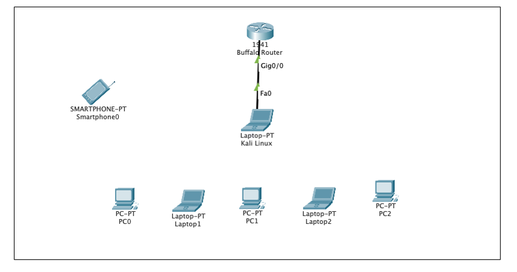

Here you can learn about the overview of wireless security and why it's important.
Wireless security issues are discussed by providing examples of how these attacks occur along with the descriptions for each attack that made wireless networks vulnerable. Precautions of these issues are mentioned that will keep the wireless networks secure along with preventing private data that is misused. A video has been created to demonstrate what to do in the wireless security experiment that has been created for the course I am working as a TA in.
